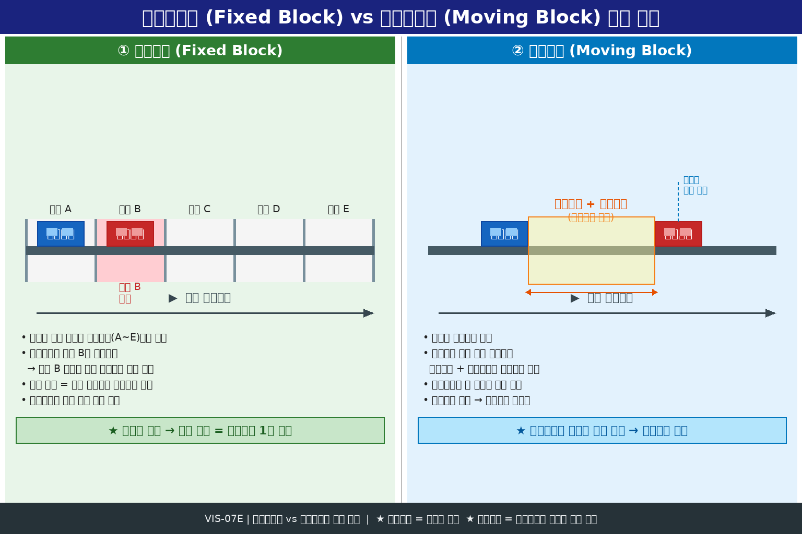
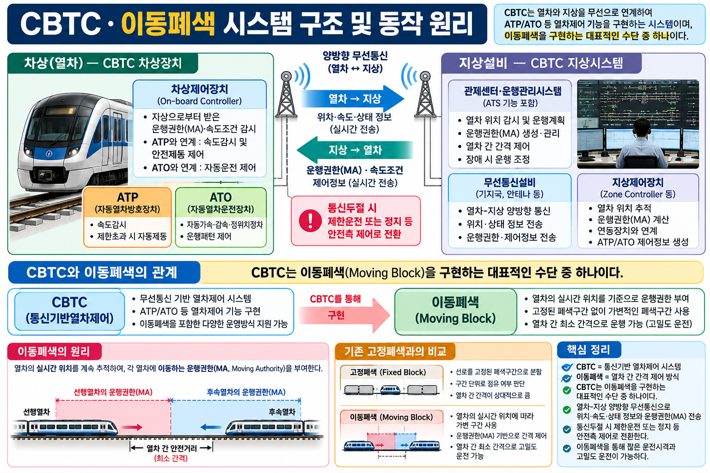

§0 · 선행 용어
CBTC (Communication Based Train Control)
무선통신을 이용해 열차의 위치·속도·상태를 실시간으로 주고받으며 열차간격과 속도를 제어하는 시스템.
→ 단순 무선설비가 아닌 '제어 시스템'임을 구별 ★
이동폐색 (Moving Block)
열차 위치·속도를 실시간으로 파악해 동적으로 안전간격을 설정하는 폐색 방식. 고정된 폐색구간이 없음.
→ CBTC ≠ 이동폐색: CBTC가 이동폐색을 구현하는 수단 ★
운행권한 / MA (Movement Authority)
지상이 차상에 전달하는 안전 이동 허가 범위·거리 정보. 열차가 안전하게 이동할 수 있는 허용 구역.
→ 지상→열차 방향으로 전달
ATP (Automatic Train Protection)
열차 과속·신호 위반 등을 자동 감지·제동하는 열차보호장치.
→ CBTC 운행권한을 실제 안전제동으로 보장하는 연계 장치
ATO (Automatic Train Operation)
가감속·정위치정차 등 열차 운전 전 과정을 자동화하는 자동운전장치.
→ CBTC 속도·위치정보를 이용해 자동운전 수행
운전시격
연속하는 두 열차가 같은 지점을 통과하는 시간 간격. 시격이 짧을수록 더 많은 열차를 운행 가능.
→ 고밀도 운전 = 운전시격 단축
§1 · CBTC 개요와 이동폐색의 관계
1-1 CBTC 정의
무선통신을 이용해 열차의 위치·속도·상태를 실시간으로 주고받으며 열차간격과 속도를 제어하는 시스템이다.
- 통신은 수단, 위치·권한·속도 제어가 목적
- 단순 무선설비와 구별: 통신정보를 이용한 종합 제어 시스템
- 정밀 위치검지 + 양방향 무선통신 + 지상·차상 제어장치로 구성
1-2 CBTC vs 이동폐색 — 개념 구분 ★★★
| 구분 | CBTC | 이동폐색 |
|---|
| 성격 |
열차제어 시스템 개념 |
안전간격 관리 방식 (폐색 방법) |
| 관계 |
CBTC가 이동폐색을 구현하는 수단 중 하나 |
| 혼동 주의 |
CBTC = 이동폐색이 아님. 별개 개념 ★ |
1-3 CBTC 정보 흐름 (양방향)
열차 → 지상: 위치 · 속도 · 상태 정보 전송
지상 → 열차: 운행권한(MA) · 속도조건 · 제어정보 전송
- 반드시 양방향 통신이 핵심 — 단방향이라는 선지는 항상 오답 ★
- 통신지연이 발생하면 제어정보의 실시간성이 저해됨 → 안전성 설계에서 중요 관리 요소
§2 · CBTC 구성 요소
열차와 지상 제어설비가 위치·상태와 운행권한·속도조건을 상호 교환하는 통신 구조.
- CBTC 핵심 인프라 — 통신 없이는 제어 불가
- 통신지연: 제어정보의 실시간성을 저해 → 성능·안전성 설계에서 중요하게 관리
- 통신두절 시: 안전측 제어(제한·정지)로 전환 원칙 적용
열차로부터 상태정보를 받고, 안전한 운행권한·속도조건을 계산해 전달하는 지상측 제어 기능.
- 각 열차의 위치·속도 정보를 수집하여 MA 계산
- 이동폐색 운용 시 동적 안전간격 결정의 핵심
지상에서 받은 운행권한·속도조건을 감시하고, ATP/ATO 기능과 연계해 열차를 제어하는 장치.
- 지상 제어장치의 명령을 수신하여 실제 열차 제어 수행
- ATP 연계: 안전제동 보장 / ATO 연계: 자동운전 수행
2-4 실시간 위치정보 · 위치정확도
| 구분 | 개념 | 시험 포인트 |
|---|
| 실시간 위치정보 |
CBTC가 짧은 운전시격과 이동폐색을 구현할 때 핵심적으로 사용하는 열차 상태정보 |
이동폐색의 근거가 되는 정보 |
| 위치정확도 |
열차간격 계산의 기초. 오차가 작을수록 정밀한 이동폐색 운용에 유리한 요소 |
정확도 ↑ → 시격 단축 가능 |
§3 · 이동폐색 지원과 고밀도 운전
CBTC의 정밀 위치검지와 양방향 통신을 활용해 열차별 동적 안전간격을 설정할 수 있는 기능.
- 고정폐색과 달리 구간 경계 없이 실시간 간격 계산
- 위치정확도가 높을수록 더 좁은 간격으로 안전 운행 가능
| 구분 | 고밀도 운전 | 짧은 운전시격 |
|---|
| 정의 |
운전시격을 줄여 동일 선로에서 더 많은 열차를 안전하게 운행하는 운용 형태 |
정밀 위치정보와 연속 제어를 통해 선행열차를 더 가깝게 추종할 수 있어 얻는 효과 |
| 관계 |
CBTC+이동폐색이 가능하게 하는 운용 목표 |
고밀도 운전의 구체적 실현 방법 |
📌 CROSS-REF — 고정폐색 vs 이동폐색 비교 (VIS-07E)

- 고정폐색: 선로를 일정 구간으로 분할, 구간당 1열차만 허용 — 간격이 고정됨
- 이동폐색: 실시간 위치 기반 동적 간격 — 열차가 움직이는 만큼 뒤 열차도 추종 가능
- 이동폐색은 CBTC와 같은 무선기반 위치검지 시스템이 있어야 구현 가능
📌 PRIMARY VIS — CBTC 시스템 구조와 정보 흐름 (VIS-08B)

§4 · ATP · ATO 연계와 운행권한(MA)
CBTC 운행권한을 실제 안전제동으로 보장하는 방호 기능과의 연계.
- 지상이 계산한 MA(운행권한)를 차상 ATP가 감시
- MA를 초과하면 자동 제동 발생 → 안전 확보
- CBTC 체계에서 안전의 최후 방호선 역할
CBTC의 속도·위치정보를 이용해 가감속·정위치정차 등 자동운전을 수행하는 연계.
- 차상제어장치가 MA 범위 내에서 ATO를 통해 자동운전 실행
- CBTC 정밀 위치정보 → 정위치정차 정확도 향상
- ATP = 안전(방호), ATO = 운전(효율) — 역할 구분 ★
4-3 운행권한 MA (Movement Authority)
MA = 열차가 안전하게 이동하도록 허용된 범위·거리 정보
- 지상 제어장치가 계산 → 차상제어장치로 무선 전달 (지상→열차)
- 이동폐색에서 MA는 실시간으로 갱신됨 — 고정 구간이 아님
- 기관사 면허·승객 승차권·전기요금과 혼동 금지 (시험 함정 선지)
§5 · 안전 설계 원칙
무선통신이 상실되면 정상 운행을 그대로 계속하기보다 제한·정지 등 안전측으로 전환하는 설계원칙.
- Fail-Safe 원칙 적용: 통신 장애 = 위험 상황 → 안전측 행동
- 통신 정상화 후 운행 재개
- "정상 운행 계속"이라는 선지는 항상 오답 ★
5-2 통신지연 관리
통신지연: 제어정보의 실시간성을 저해할 수 있어 CBTC 성능과 안전성 설계에서 중요하게 관리되는 요소.
- 지연이 클수록 MA 갱신 주기가 길어져 이동폐색 정확도 저하
- 통신지연 허용 기준을 설계 단계에서 명확히 규정
§6 · 시험 포인트
⛔ 함정 — CBTC = 이동폐색 (X)
CBTC는 '시스템', 이동폐색은 '폐색 방식'. CBTC가 이동폐색을 구현하는 수단이지, 동일 개념이 아님.
⛔ 함정 — 통신두절 시 정상 운행 계속 (X)
통신두절 = 안전측 제어(제한·정지)로 전환. "그대로 계속"은 항상 오답.
⛔ 함정 — CBTC는 단방향 통신 (X)
반드시 양방향. 열차→지상(위치·상태), 지상→열차(MA·제어정보).
✅ 핵심 — 지상/관제 제어장치 vs 차상제어장치
지상: 상태정보 수신 → MA·속도조건 계산·전달. 차상: MA 감시 + ATP/ATO 연계 제어.
✅ 핵심 — 위치정확도
열차간격 계산의 기초. 정확도 높을수록 이동폐색 정밀 운용 가능 → 운전시격 단축.
✅ 핵심 — MA (운행권한)
지상→열차 방향. "안전하게 이동하도록 허용된 범위·거리". 기관사 면허와 혼동 금지.
기출문제
sig_126 · Part 6 · S등급
Q01
다음 설명에 해당하는 용어·장치로 가장 적절한 것은?
"무선통신을 이용해 열차의 위치·속도·상태를 실시간으로 주고받으며 열차간격과 속도를 제어하는 시스템이다."
- ① 지상/관제 제어장치
- ② CBTC
- ③ 통신두절 시 안전측 제어
- ④ 위치정확도
sig_127 · Part 6 · S등급
Q02
다음 중 「CBTC」에 대한 설명으로 옳은 것은?
- ① 열차간격 계산의 기초가 되므로 오차가 작을수록 정밀한 이동폐색 운용에 유리한 요소이다.
- ② 무선통신을 이용해 열차의 위치·속도·상태를 실시간으로 주고받으며 열차간격과 속도를 제어하는 시스템이다.
- ③ 열차로부터 상태정보를 받고 안전한 운행권한·속도조건을 계산해 전달하는 지상측 제어 기능이다.
- ④ CBTC 운행권한을 실제 안전제동으로 보장하는 방호 기능과의 연계를 뜻한다.
sig_128 · Part 6 · A+등급
Q03
다음 설명에 해당하는 용어·장치로 가장 적절한 것은?
"열차와 지상 제어설비가 위치·상태와 운행권한·속도조건을 상호 교환하는 통신 구조이다."
- ① 고밀도 운전
- ② 양방향 무선통신
- ③ ATP 연계
- ④ 지상/관제 제어장치
sig_129 · Part 6 · A+등급
Q04
다음 중 「양방향 무선통신」에 대한 설명으로 옳은 것은?
- ① 제어정보의 실시간성을 저해할 수 있어 CBTC 성능과 안전성 설계에서 중요하게 관리되는 요소이다.
- ② 열차와 지상 제어설비가 위치·상태와 운행권한·속도조건을 상호 교환하는 통신 구조이다.
- ③ 운전시격을 줄여 동일 선로에서 더 많은 열차를 안전하게 운행하는 운용 형태이다.
- ④ 무선통신이 상실되면 정상 운행을 그대로 계속하기보다 제한·정지 등 안전측으로 전환하는 설계원칙이다.
sig_130 · Part 6 · A+등급
Q05
다음 설명에 해당하는 용어·장치로 가장 적절한 것은?
"CBTC가 짧은 운전시격과 이동폐색을 구현할 때 핵심적으로 사용하는 열차 상태정보이다."
- ① 짧은 운전시격
- ② 통신지연
- ③ 지상/관제 제어장치
- ④ 실시간 위치정보
sig_131 · Part 6 · A+등급
Q06
다음 중 「실시간 위치정보」에 대한 설명으로 옳은 것은?
- ① CBTC가 짧은 운전시격과 이동폐색을 구현할 때 핵심적으로 사용하는 열차 상태정보이다.
- ② 열차로부터 상태정보를 받고 안전한 운행권한·속도조건을 계산해 전달하는 지상측 제어 기능이다.
- ③ 무선통신을 이용해 열차의 위치·속도·상태를 실시간으로 주고받으며 열차간격과 속도를 제어하는 시스템이다.
- ④ 열차와 지상 제어설비가 위치·상태와 운행권한·속도조건을 상호 교환하는 통신 구조이다.
sig_132 · Part 6 · A+등급
Q07
다음 설명에 해당하는 용어·장치로 가장 적절한 것은?
"열차로부터 상태정보를 받고 안전한 운행권한·속도조건을 계산해 전달하는 지상측 제어 기능이다."
- ① 실시간 위치정보
- ② 이동폐색 지원
- ③ 지상/관제 제어장치
- ④ 양방향 무선통신
sig_133 · Part 6 · A+등급
Q08
다음 중 「지상/관제 제어장치」에 대한 설명으로 옳은 것은?
- ① 지상에서 받은 운행권한·속도조건을 감시하고 ATP/ATO 기능과 연계해 열차를 제어하는 장치이다.
- ② CBTC가 짧은 운전시격과 이동폐색을 구현할 때 핵심적으로 사용하는 열차 상태정보이다.
- ③ 열차로부터 상태정보를 받고 안전한 운행권한·속도조건을 계산해 전달하는 지상측 제어 기능이다.
- ④ 운전시격을 줄여 동일 선로에서 더 많은 열차를 안전하게 운행하는 운용 형태이다.
sig_134 · Part 6 · A+등급
Q09
다음 설명에 해당하는 용어·장치로 가장 적절한 것은?
"지상에서 받은 운행권한·속도조건을 감시하고 ATP/ATO 기능과 연계해 열차를 제어하는 장치이다."
- ① 고밀도 운전
- ② 차상제어장치
- ③ 실시간 위치정보
- ④ ATP 연계
sig_135 · Part 6 · A+등급
Q10
다음 중 「차상제어장치」에 대한 설명으로 옳은 것은?
- ① CBTC의 속도·위치정보를 이용해 가감속·정위치정차 등 자동운전을 수행하는 연계를 뜻한다.
- ② 열차로부터 상태정보를 받고 안전한 운행권한·속도조건을 계산해 전달하는 지상측 제어 기능이다.
- ③ 지상에서 받은 운행권한·속도조건을 감시하고 ATP/ATO 기능과 연계해 열차를 제어하는 장치이다.
- ④ CBTC의 정밀 위치검지와 양방향 통신을 활용해 열차별 동적 안전간격을 설정할 수 있는 기능이다.
sig_136 · Part 6 · A+등급
Q11
다음 설명에 해당하는 용어·장치로 가장 적절한 것은?
"CBTC의 정밀 위치검지와 양방향 통신을 활용해 열차별 동적 안전간격을 설정할 수 있는 기능이다."
- ① 차상제어장치
- ② ATO 연계
- ③ 위치정확도
- ④ 이동폐색 지원
sig_137 · Part 6 · A+등급
Q12
다음 중 「이동폐색 지원」에 대한 설명으로 옳은 것은?
- ① 무선통신을 이용해 열차의 위치·속도·상태를 실시간으로 주고받으며 열차간격과 속도를 제어하는 시스템이다.
- ② 열차간격 계산의 기초가 되므로 오차가 작을수록 정밀한 이동폐색 운용에 유리한 요소이다.
- ③ 열차와 지상 제어설비가 위치·상태와 운행권한·속도조건을 상호 교환하는 통신 구조이다.
- ④ CBTC의 정밀 위치검지와 양방향 통신을 활용해 열차별 동적 안전간격을 설정할 수 있는 기능이다.
sig_138 · Part 6 · A+등급
Q13
다음 설명에 해당하는 용어·장치로 가장 적절한 것은?
"운전시격을 줄여 동일 선로에서 더 많은 열차를 안전하게 운행하는 운용 형태이다."
- ① CBTC
- ② 이동폐색 지원
- ③ ATP 연계
- ④ 고밀도 운전
sig_139 · Part 6 · A+등급
Q14
다음 중 「고밀도 운전」에 대한 설명으로 옳은 것은?
- ① 운전시격을 줄여 동일 선로에서 더 많은 열차를 안전하게 운행하는 운용 형태이다.
- ② 제어정보의 실시간성을 저해할 수 있어 CBTC 성능과 안전성 설계에서 중요하게 관리되는 요소이다.
- ③ 무선통신이 상실되면 정상 운행을 그대로 계속하기보다 제한·정지 등 안전측으로 전환하는 설계원칙이다.
- ④ CBTC 운행권한을 실제 안전제동으로 보장하는 방호 기능과의 연계를 뜻한다.
sig_140 · Part 6 · A+등급
Q15
다음 설명에 해당하는 용어·장치로 가장 적절한 것은?
"정밀 위치정보와 연속 제어를 통해 선행열차를 더 가깝게 추종할 수 있어 얻는 효과이다."
- ① 통신지연
- ② 짧은 운전시격
- ③ 이동폐색 지원
- ④ ATP 연계
sig_141 · Part 6 · A+등급
Q16
다음 중 「짧은 운전시격」에 대한 설명으로 옳은 것은?
- ① 제어정보의 실시간성을 저해할 수 있어 CBTC 성능과 안전성 설계에서 중요하게 관리되는 요소이다.
- ② 무선통신이 상실되면 정상 운행을 그대로 계속하기보다 제한·정지 등 안전측으로 전환하는 설계원칙이다.
- ③ 정밀 위치정보와 연속 제어를 통해 선행열차를 더 가깝게 추종할 수 있어 얻는 효과이다.
- ④ 열차와 지상 제어설비가 위치·상태와 운행권한·속도조건을 상호 교환하는 통신 구조이다.
sig_142 · Part 6 · A+등급
Q17
다음 설명에 해당하는 용어·장치로 가장 적절한 것은?
"CBTC 운행권한을 실제 안전제동으로 보장하는 방호 기능과의 연계를 뜻한다."
- ① ATP 연계
- ② 양방향 무선통신
- ③ 실시간 위치정보
- ④ 위치정확도
sig_143 · Part 6 · A+등급
Q18
다음 중 「ATP 연계」에 대한 설명으로 옳은 것은?
- ① 무선통신을 이용해 열차의 위치·속도·상태를 실시간으로 주고받으며 열차간격과 속도를 제어하는 시스템이다.
- ② 무선통신이 상실되면 정상 운행을 그대로 계속하기보다 제한·정지 등 안전측으로 전환하는 설계원칙이다.
- ③ CBTC 운행권한을 실제 안전제동으로 보장하는 방호 기능과의 연계를 뜻한다.
- ④ 제어정보의 실시간성을 저해할 수 있어 CBTC 성능과 안전성 설계에서 중요하게 관리되는 요소이다.
sig_144 · Part 6 · A+등급
Q19
다음 설명에 해당하는 용어·장치로 가장 적절한 것은?
"CBTC의 속도·위치정보를 이용해 가감속·정위치정차 등 자동운전을 수행하는 연계를 뜻한다."
- ① ATO 연계
- ② 짧은 운전시격
- ③ 양방향 무선통신
- ④ 통신지연
sig_145 · Part 6 · A+등급
Q20
다음 중 「ATO 연계」에 대한 설명으로 옳은 것은?
- ① 무선통신이 상실되면 정상 운행을 그대로 계속하기보다 제한·정지 등 안전측으로 전환하는 설계원칙이다.
- ② CBTC의 정밀 위치검지와 양방향 통신을 활용해 열차별 동적 안전간격을 설정할 수 있는 기능이다.
- ③ CBTC의 속도·위치정보를 이용해 가감속·정위치정차 등 자동운전을 수행하는 연계를 뜻한다.
- ④ 지상에서 받은 운행권한·속도조건을 감시하고 ATP/ATO 기능과 연계해 열차를 제어하는 장치이다.
sig_146 · Part 6 · A+등급
Q21
다음 설명에 해당하는 용어·장치로 가장 적절한 것은?
"무선통신이 상실되면 정상 운행을 그대로 계속하기보다 제한·정지 등 안전측으로 전환하는 설계원칙이다."
- ① 실시간 위치정보
- ② 짧은 운전시격
- ③ 통신두절 시 안전측 제어
- ④ 고밀도 운전
sig_147 · Part 6 · A+등급
Q22
다음 중 「통신두절 시 안전측 제어」에 대한 설명으로 옳은 것은?
- ① 정밀 위치정보와 연속 제어를 통해 선행열차를 더 가깝게 추종할 수 있어 얻는 효과이다.
- ② 제어정보의 실시간성을 저해할 수 있어 CBTC 성능과 안전성 설계에서 중요하게 관리되는 요소이다.
- ③ 무선통신이 상실되면 정상 운행을 그대로 계속하기보다 제한·정지 등 안전측으로 전환하는 설계원칙이다.
- ④ CBTC가 짧은 운전시격과 이동폐색을 구현할 때 핵심적으로 사용하는 열차 상태정보이다.
sig_148 · Part 6 · A+등급
Q23
다음 설명에 해당하는 용어·장치로 가장 적절한 것은?
"제어정보의 실시간성을 저해할 수 있어 CBTC 성능과 안전성 설계에서 중요하게 관리되는 요소이다."
- ① 이동폐색 지원
- ② 지상/관제 제어장치
- ③ 통신지연
- ④ 통신두절 시 안전측 제어
sig_149 · Part 6 · A+등급
Q24
다음 중 「통신지연」에 대한 설명으로 옳은 것은?
- ① 제어정보의 실시간성을 저해할 수 있어 CBTC 성능과 안전성 설계에서 중요하게 관리되는 요소이다.
- ② 무선통신을 이용해 열차의 위치·속도·상태를 실시간으로 주고받으며 열차간격과 속도를 제어하는 시스템이다.
- ③ 열차간격 계산의 기초가 되므로 오차가 작을수록 정밀한 이동폐색 운용에 유리한 요소이다.
- ④ 정밀 위치정보와 연속 제어를 통해 선행열차를 더 가깝게 추종할 수 있어 얻는 효과이다.
sig_150 · Part 6 · A+등급
Q25
다음 설명에 해당하는 용어·장치로 가장 적절한 것은?
"열차간격 계산의 기초가 되므로 오차가 작을수록 정밀한 이동폐색 운용에 유리한 요소이다."
- ① CBTC
- ② 위치정확도
- ③ ATO 연계
- ④ 고밀도 운전
sig_207 · Part 6 · A+등급
Q26
CBTC와 이동폐색의 관계로 가장 적절한 것은?
- ① 완전히 같은 뜻이다
- ② CBTC는 통신기반 열차제어 개념이고 이동폐색은 안전간격 관리 방식이다
- ③ CBTC는 통신과 무관하다
- ④ 이동폐색은 항상 지상신호만 쓴다
sig_213 · Part 6 · A+등급
Q27
CBTC의 정보 흐름으로 옳은 것은?
- ① 열차→지상: 위치·속도·상태, 지상→열차: 운행권한·제어정보
- ② 열차→지상은 음성만 가능
- ③ 지상→열차는 불가능
- ④ 단방향 통신이 기본
sig_222 · Part 6 · A+등급
Q28
CBTC를 단순 무선설비로 보면 안 되는 이유는?
- ① 통신정보를 이용해 위치·권한·속도제어를 수행하는 시스템이기 때문
- ② 무선이 전혀 없기 때문
- ③ 승객만 사용하기 때문
- ④ 법규만 처리하기 때문
sig_234 · Part 6 · A+등급
Q29
운행권한(MA)의 의미에 가장 가까운 것은?
- ① 열차가 안전하게 이동하도록 허용된 범위/거리 정보
- ② 기관사 면허
- ③ 승객 승차권
- ④ 전기요금
정답 및 해설
CBTC: 무선통신을 이용해 열차의 위치·속도·상태를 실시간으로 주고받으며 열차간격과 속도를 제어하는 시스템이다.
CBTC 정의: 무선통신을 이용해 열차의 위치·속도·상태를 실시간으로 주고받으며 열차간격과 속도를 제어하는 시스템.
①은 위치정확도, ③은 지상/관제 제어장치, ④는 ATP 연계에 대한 설명이다.
양방향 무선통신: 열차와 지상 제어설비가 위치·상태와 운행권한·속도조건을 상호 교환하는 통신 구조이다.
양방향 무선통신: 열차와 지상 제어설비가 위치·상태와 운행권한·속도조건을 상호 교환하는 통신 구조.
①은 통신지연, ③은 고밀도 운전, ④는 통신두절 시 안전측 제어에 대한 설명이다.
실시간 위치정보: CBTC가 짧은 운전시격과 이동폐색을 구현할 때 핵심적으로 사용하는 열차 상태정보이다.
실시간 위치정보: CBTC가 짧은 운전시격과 이동폐색을 구현할 때 핵심적으로 사용하는 열차 상태정보.
②는 지상/관제 제어장치, ③은 CBTC, ④는 양방향 무선통신에 대한 설명이다.
지상/관제 제어장치: 열차로부터 상태정보를 받고 안전한 운행권한·속도조건을 계산해 전달하는 지상측 제어 기능이다.
지상/관제 제어장치: 열차로부터 상태정보를 받고 안전한 운행권한·속도조건을 계산해 전달하는 지상측 제어 기능.
①은 차상제어장치에 대한 설명이다.
차상제어장치: 지상에서 받은 운행권한·속도조건을 감시하고 ATP/ATO 기능과 연계해 열차를 제어하는 장치이다.
차상제어장치: 지상에서 받은 운행권한·속도조건을 감시하고 ATP/ATO 기능과 연계해 열차를 제어하는 장치.
①은 ATO 연계, ②는 지상/관제 제어장치, ④는 이동폐색 지원에 대한 설명이다.
이동폐색 지원: CBTC의 정밀 위치검지와 양방향 통신을 활용해 열차별 동적 안전간격을 설정할 수 있는 기능이다.
이동폐색 지원: CBTC의 정밀 위치검지와 양방향 통신을 활용해 열차별 동적 안전간격을 설정할 수 있는 기능.
①은 CBTC, ②는 위치정확도, ③은 양방향 무선통신에 대한 설명이다.
고밀도 운전: 운전시격을 줄여 동일 선로에서 더 많은 열차를 안전하게 운행하는 운용 형태이다.
고밀도 운전: 운전시격을 줄여 동일 선로에서 더 많은 열차를 안전하게 운행하는 운용 형태.
②는 통신지연, ③은 통신두절 시 안전측 제어, ④는 ATP 연계에 대한 설명이다.
짧은 운전시격: 정밀 위치정보와 연속 제어를 통해 선행열차를 더 가깝게 추종할 수 있어 얻는 효과이다.
짧은 운전시격: 정밀 위치정보와 연속 제어를 통해 선행열차를 더 가깝게 추종할 수 있어 얻는 효과.
①은 통신지연, ②는 통신두절 시 안전측 제어, ④는 양방향 무선통신에 대한 설명이다.
ATP 연계: CBTC 운행권한을 실제 안전제동으로 보장하는 방호 기능과의 연계를 뜻한다.
ATP 연계: CBTC 운행권한을 실제 안전제동으로 보장하는 방호 기능과의 연계.
①은 CBTC, ②는 통신두절 시 안전측 제어, ④는 통신지연에 대한 설명이다.
ATO 연계: CBTC의 속도·위치정보를 이용해 가감속·정위치정차 등 자동운전을 수행하는 연계를 뜻한다.
ATO 연계: CBTC의 속도·위치정보를 이용해 가감속·정위치정차 등 자동운전을 수행하는 연계.
①은 통신두절 시 안전측 제어, ②는 이동폐색 지원, ④는 차상제어장치에 대한 설명이다.
통신두절 시 안전측 제어: 무선통신이 상실되면 정상 운행을 그대로 계속하기보다 제한·정지 등 안전측으로 전환하는 설계원칙이다.
통신두절 시 안전측 제어: 무선통신이 상실되면 정상 운행을 그대로 계속하기보다 제한·정지 등 안전측으로 전환하는 설계원칙.
①은 짧은 운전시격, ②는 통신지연, ④는 실시간 위치정보에 대한 설명이다.
통신지연: 제어정보의 실시간성을 저해할 수 있어 CBTC 성능과 안전성 설계에서 중요하게 관리되는 요소이다.
통신지연: 제어정보의 실시간성을 저해할 수 있어 CBTC 성능과 안전성 설계에서 중요하게 관리되는 요소.
②는 CBTC, ③은 위치정확도, ④는 짧은 운전시격에 대한 설명이다.
위치정확도: 열차간격 계산의 기초가 되므로 오차가 작을수록 정밀한 이동폐색 운용에 유리한 요소이다.
CBTC는 '통신기반 열차제어 시스템' 개념이고, 이동폐색은 '안전간격 관리 방식(폐색 방법)'이다.
CBTC가 이동폐색을 구현하는 수단 중 하나이며, 둘은 동일 개념이 아니다.
CBTC는 반드시 양방향 통신: 열차→지상(위치·속도·상태), 지상→열차(운행권한·제어정보).
단방향이라는 선지는 항상 오답이다.
CBTC는 단순 무선설비가 아니라, 통신정보를 이용해 위치·권한·속도제어를 수행하는 시스템이다.
통신은 수단이고 제어가 목적임을 파악해야 한다.
운행권한(MA, Movement Authority): 열차가 안전하게 이동하도록 허용된 범위/거리 정보.
지상 제어장치가 계산하여 차상으로 전달한다. 기관사 면허·승객 승차권과 혼동 금지.
UNIT 08-03 · CBTC · 이동폐색 — FINAL PUBLISH v1.1
SOURCE: signal-exam-data.ts Part 6 (sig_126~sig_150, sig_207, sig_213, sig_222, sig_234) — 29문항
VIS: VIS-07E 고정폐색 vs 이동폐색 CROSS-REF (본문 §3) — 이미지 삽입 ✅
VIS: VIS-08B CBTC 시스템 구조와 정보 흐름 PRIMARY VIS (본문 §2 끝) — 이미지 삽입 ✅
LINKAGE: new_4.html / GATE5_PRINT_ALL_v1.1.html / GATE5_MASTER_ASSET_MAP_v1.4.md
PRINT: @page A4 portrait; margin 12mm 12mm 12mm 18mm